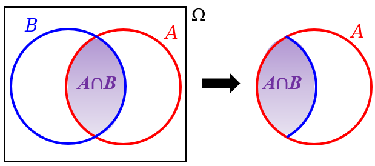

Probabilidade Condicional e Regra da Multiplicação
ESTAT0072 – Probabilidade I
Prof. Dr. Sadraque E. F. Lucena
sadraquelucena@academico.ufs.br
Exemplo 5.1
Você lança um dado comum de 6 faces e observa o número que aparece na face voltada para cima.
Considere estes dois eventos:
- \(A\): “A face voltada para cima é um número par”
- \(B\): “A face voltada para cima é um número maior que 4”
Qual é a probabilidade de que a face voltada para cima seja maior que 4, dado que sabemos que ela é um número par?
Definição 5.1: Probabilidade Condicional
A probabilidade de que um evento \(B\) ocorra, dado que o evento \(A\) já ocorreu, é definida como: \[ P(B|A) = \frac{P(A\cap B)}{P(A)}, \] desde que \(P(A) > 0\).
\(P(B|A)\) se lê como probabilidade de \(B\) dado \(A\).
O que estamos buscando ao calcular \(P(B|A)\)?
- Estamos tentando descobrir a probabilidade de estar em \(B\), sabendo que já estamos em \(A\).
Reduzindo o Espaço Amostral
Tradicionalmente, ao calcular probabilidades, consideramos todos os resultados possíveis no espaço amostral (\(\Omega\)).
No entanto, com a probabilidade condicional, a informação de que o evento \(A\) já ocorreu muda nosso universo de possibilidades.
Agora, nosso novo “espaço amostral” se torna o próprio evento \(A\). Não olhamos mais para \(\Omega\) inteiro, mas apenas para os resultados que estão dentro de \(A\).

Fonte: http://clubes.obmep.org.br/blog/sala-de-estudo-probabilidades-sala-3/
\(P(B | A)\) é uma Probabilidade
\(P(B | A)\) também é uma medida de probabilidade que respeita todos os axiomas de Kolmogorov:
- \(P(S | A) = 1\)
- \(P(B | A) \geq 0\)
- Se \(B_1\) e \(B_2\) são mutuamente excudentes, \(P(B_1 \cup B_2 | A) = P(B_1 | A) + P(B_2 | A)\).
Todas as regras que aprendemos na aula anterior (complementar, união, etc.) continuam valendo para probabilidade condicional.
Temos duas maneiras principais de calcular a probabilidade condicional \(P(B∣A)\):
Abordagem Direta (Espaço Amostral Reduzido):
Consideramos diretamente a probabilidade de \(B\) dentro do novo e menor espaço amostral, que é o evento \(A\).
Pense: “Dos casos em que \(A\) acontece, quantos deles também fazem \(B\) acontecer?”
Abordagem pela Definição (Fórmula):
- Para usar essa abordagem, precisamos conhecer (ou conseguir calcular) a probabilidade da interseção de \(A\) e \(B\), \(P(A\cap B)\), e a probabilidade de \(A\), \(P(A)\).
Exemplo 5.2
Em uma pesquisa de opinião realizada com 800 indivíduos sobre a aceitação de uma nova política pública, os resultados foram tabulados por gênero da seguinte forma:
| Categoria | Mulheres | Homens | Total |
|---|---|---|---|
| Aprovam | 250 | 190 | 440 |
| Desaprovam | 120 | 240 | 360 |
| Total | 370 | 430 | 800 |
Se uma pessoa é selecionada aleatoriamente dessa pesquisa e sabemos que ela aprovou a nova política pública, qual é a probabilidade de que essa pessoa seja um homem?
Exemplo 5.3
Em um estudo de mercado recente sobre os hábitos de consumo de conteúdo digital, observou-se que 40% dos participantes assinam serviços de streaming de filmes. Além disso, o estudo revelou que 25% dos participantes assinam serviços de streaming de filmes e também são consumidores frequentes de documentários. Se um participante é selecionado aleatoriamente e sabemos que ele assina serviços de streaming de filmes, qual é a probabilidade de que ele também seja um consumidor frequente de documentários?
Exemplo 5.4
Em uma pesquisa recente com estudantes universitários, foram levantados dados sobre o consumo de plataformas de streaming. Os resultados mostraram que 70% dos estudantes utilizam uma plataforma de streaming de vídeo, enquanto 50% utilizam uma plataforma de streaming de música. Além disso, verificou-se que 85% dos estudantes utilizam pelo menos uma dessas duas plataformas (seja de vídeo ou de música). Com base nessas informações, se um estudante é selecionado aleatoriamente e sabemos que ele utiliza uma plataforma de streaming de vídeo, qual é a probabilidade de que ele também utilize uma plataforma de streaming de música?
Agora vamos mudar um pouco…
Exemplo 5.5
Um lote contém 20 peças defeituosas e 80 não-defeituosas. Qual a probabilidade de escolhermos duas peças defeituosas:
com reposição?
sem reposição?
Regra da Multiplicação
Uma das consequências mais importantes da definição de probabilidade condicional é que podemos rearranjá-la: \[ P(B|A) = \frac{P(A\cap B)}{P(A)} \Rightarrow P(A\cap B) = P(A)P(B|A). \]
Este resultado é conhecido como Regra da Multiplicação ou Teorema da Multiplicação para eventos quaisquer.
Lembre-se: Use esta regra quando o evento \(B\) é influenciado ou depende da ocorrência do evento \(A\).
- No exemplo das peças, a probabilidade da segunda peça ser defeituosa depende se a primeira foi reposta ou não!
Exemplo 5.6
Em uma sala com 15 pessoas, há 6 homens e 9 mulheres. Duas pessoas são escolhidas aleatoriamente, uma após a outra, para receber um brinde. Qual é a probabilidade de que as duas sejam mulheres?
Regra da Multiplicação
- A regra da multiplicação pode ser generalizada para mais de dois eventos da seguinte maneira: \[ \begin{aligned} &P(A_1\cap A_2\cap A_3\cap\cdots\cap A_n) =\\ &P(A_1)P(A_2|A_1)P(A_3|A_1\cap A_2)\cdots P(A_n|A_1\cap\cdots\cap A_{n-1}). \end{aligned} \]
Exemplo 5.7
Três cartas são escolhidas em sucessão, sem reposição, de um baralho comum de 52 cartas. Determine a probabilidade do evento \(A_1 \cap A_2 \cap A_3\), onde:
- \(A_1\): a primeira carta escolhida é um ás vermelho.
- \(A_2\): a segunda carta escolhida é um ás ou um valete.
- \(A_3\): a terceira carta escolhida é maior que 3, mas menor que 7 (ou seja, 4, 5 ou 6).
Resumo
| Conceito | Intuição | Fórmula |
|---|---|---|
| Probabilidade Condicional | Probabilidade de \(B\) ocorrer sabendo que \(A\) já aconteceu. | \(P(B|A) = \frac{P(A \cap B)}{P(A)}\) |
| Regra da Multiplicação | Probabilidade da interseção (ocorrência sucessiva de eventos). | \(P(A \cap B) = P(A) \cdot P(B|A)\) |
Fim